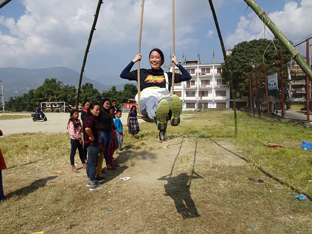
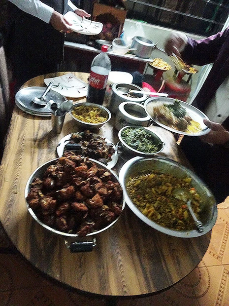
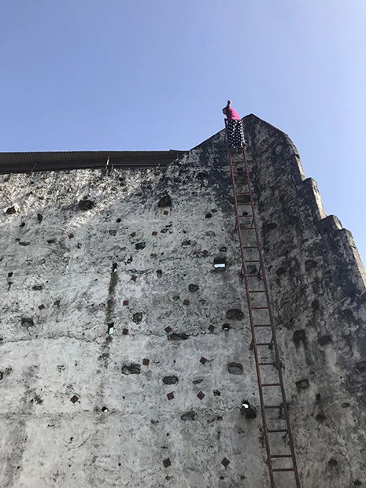
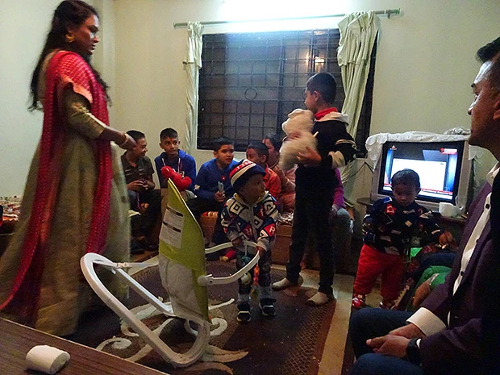

「金額が自分の予算内で、インターネットサイトの体験談などを読み、過去に行かれた方々が『良い経験になった』というコメントをしていたから参加を決めました。
メールでのやりとりがスムーズで、質問にも丁寧にに答えて下さったので有難かったです。
首都のカトマンズは、自分が想像していたよりもはるかに都会でした。
カトマンズから離れたビレッジは、カトマンズと全く異なり、ある意味想像通りだったように思います。
英語レッスンは、ただ単に英語を学ぶだけではありませんでした。
英語の先生が、とても良いお人柄の方で、色々な場所に連れて行って下さり、色々な事を英語で教えてくださり、意見交換をしたりしました。
本当に楽しかったです。
これからも英語を頑張って勉強しようと思えました。
レッスン時間は私にとって短すぎるなと思いました。


大学教授のホストファミリーは、私を家族の一員として迎え入れてくれ、ネパールのホームステイはかけがえのない経験になりました。
特に私が訪れた時期は、お祭りシーズンだったため、家族や親等全員で集まる機会が多かったです。
どんな時も、ありのままのオープンな感じで、接してくれました。
その結果、ネパールのネパール人の暮らしを間近で見て、経験し、学び、とても楽しかったです。
家、トイレ、食べ物、人々、暮らしが日本と全く違う。
とても刺激的でした。
ネパールに滞在して感じるのは、ネパールというのは、家族や宗教を大切にし日々生きる優しい人々が住む、壮大な自然のある美しい国だという印象です。
１ヶ月間、他の国に滞在するということは、私にとって初めての経験でした。
これまで色々な国に旅行したり、高校時代に１週間程オーストラリアでホームステイをしたりしてきました。
その中でも、今回の経験は自分にとって１番良いものでした。
またネパールへ、絶対に行くと思います。
数年後になるかと思いますが、今度は個人で旅行をしたいです。
そして今回出会った方々に、また会いに行きたいです。


ホストファミリーのお土産を買う際に、『家族の趣味は何か』というのを事前に知らせて頂ければ、それに合ったものを持っていくことができ、もっと喜んでくれるのではないかなと思いました。
現地では、特に困ったことはなかったので、現地受入団体の方と接する機会はありませんでした。
特に聞きたいことがあれば、電話すればいつでも聞いて下さいました。
ネパールでの生活は、全てが違っていて、毎日が刺激的でした。
毎日想像以上のことが起こり、一瞬一瞬が私にとって素晴らしい経験となりました。
もっと多くの日本人の方々が行けたら良いなと思います。
ありがとうございました。」